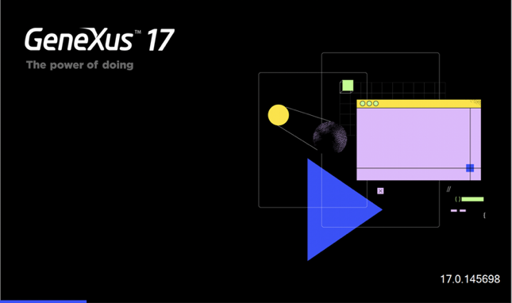

GeneXus 17 is the latest major stable release of GeneXus. It has been released on October 20th, 2020.
This is the entry point of the GeneXus 17 technical release notes. These are an overview of GeneXus 17 features (compared to GeneXus 16) and what needs to be taken into account to adopt it.
For a broader overview of GeneXus 17, please visit its homepage: http://genexus.com/genexus17
Download: http://genexus.com/v17-download

Note: To read more about GeneXus, go to GeneXus - Table of contents; and to learn GeneXus, go to to http://training.genexus.com.